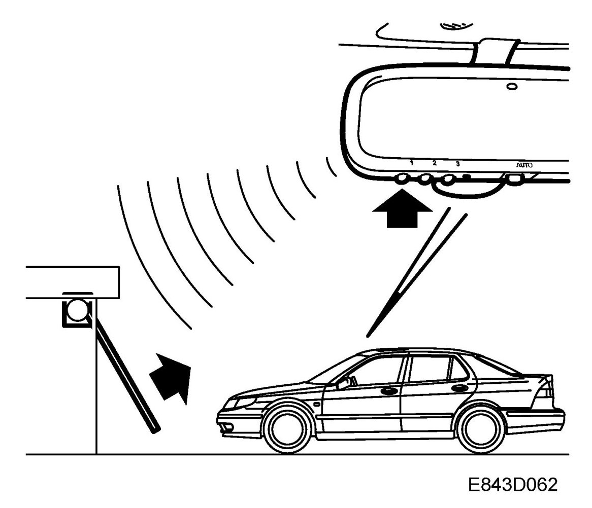
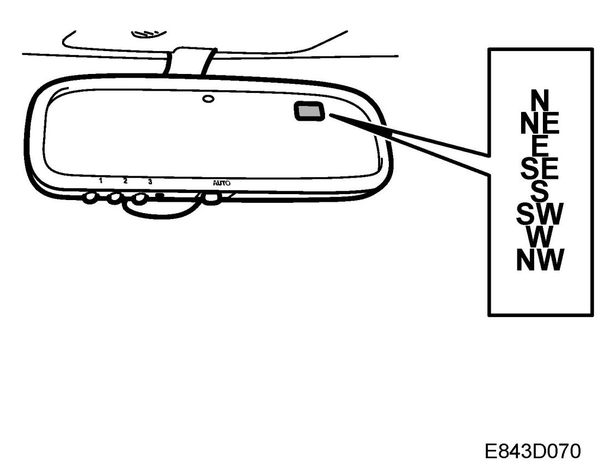
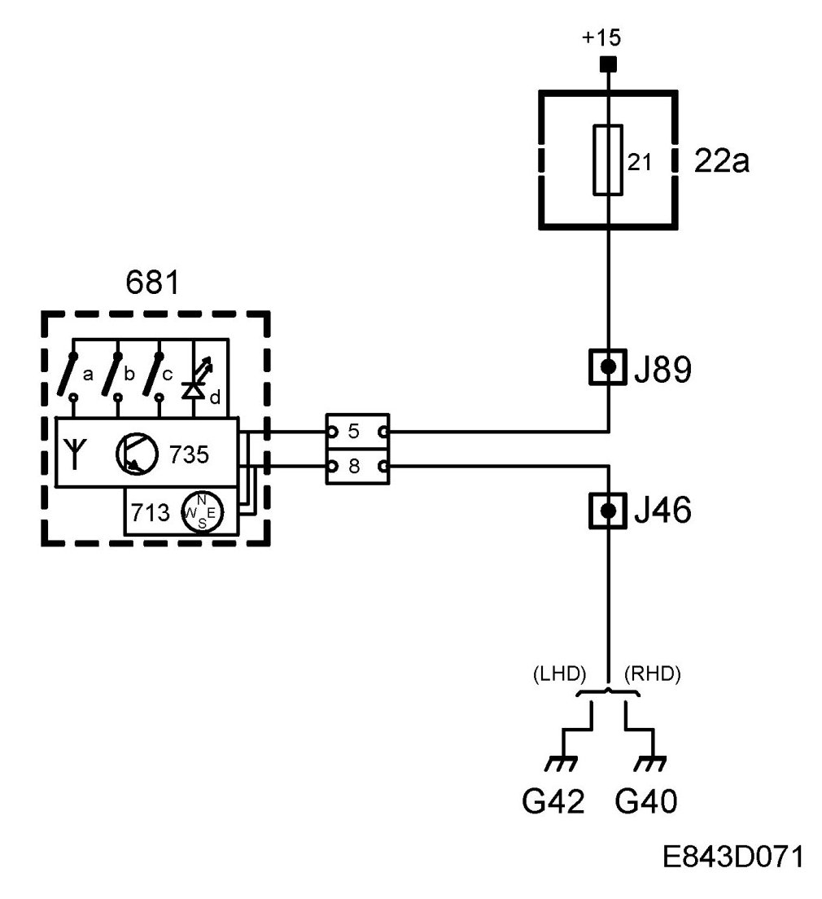
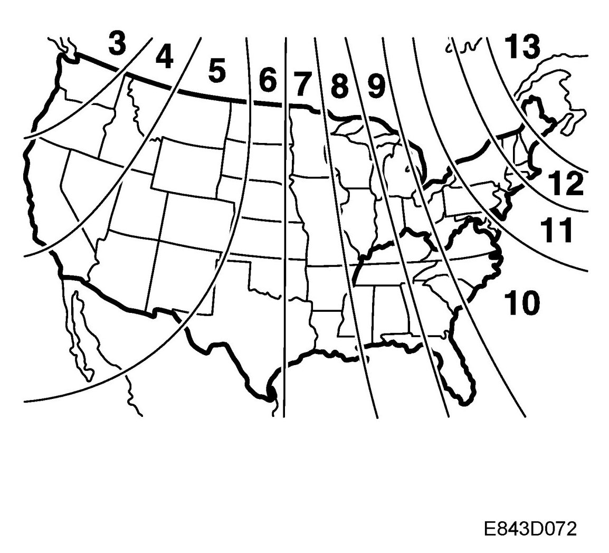
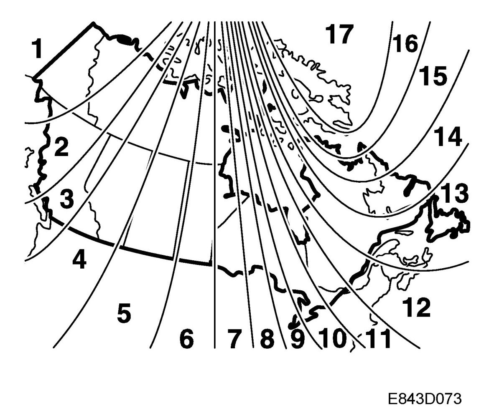
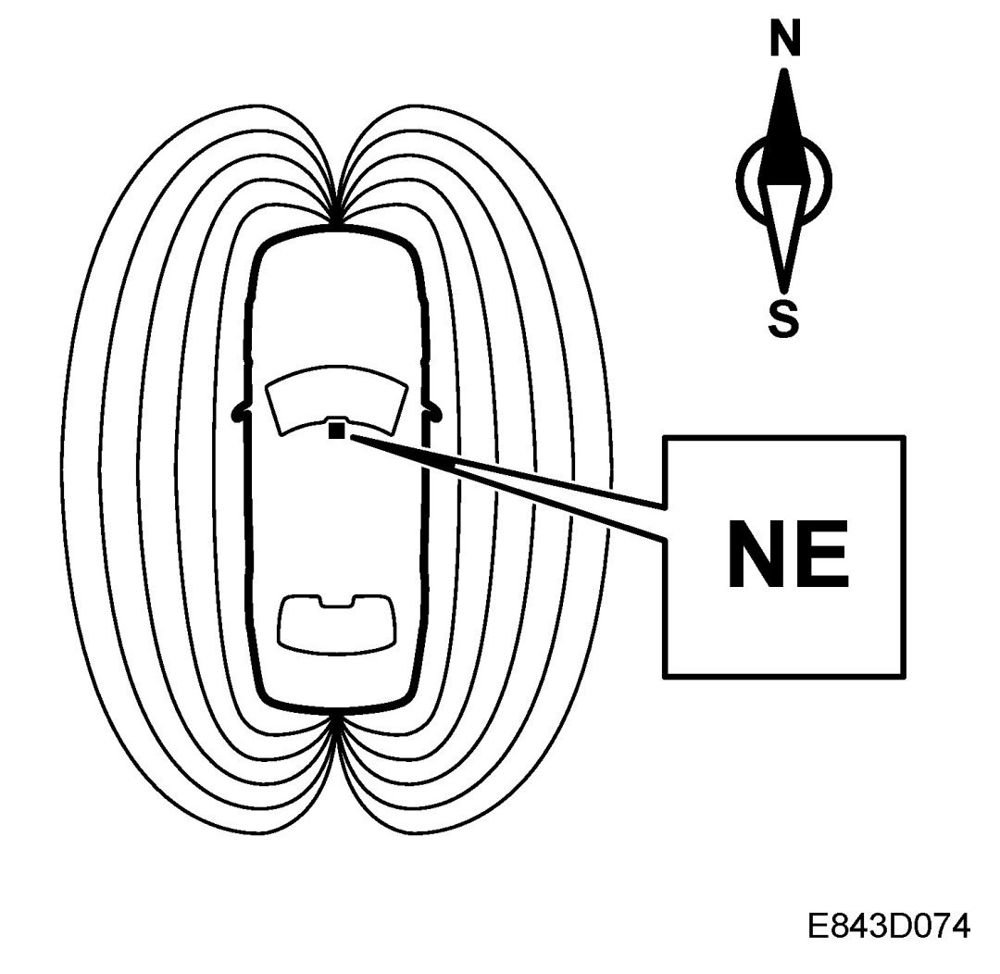

Interior Rearview Mirror With Remote Control, Garage Door Opener And Compass, Detailed Description (US/CA)
Interior Rearview Mirror With Remote Control, Garage Door Opener And Compass, Detailed Description (US/CA)
Remote control, garage door opening

The unit is integrated in the rearview mirror. This garage door opener is meant to eliminate the need for separate remote controls for garage door openers. The garage door opener can store frequencies for three different remote controls. The unit consists of a receiver which reads the signal of the existing remote control during programming, a transmitter that sends out a signal when you press a memory button to open the garage door, a processor, and a non-volatile memory. The garage door opener can be programmed for both rolling codes and fixed codes.
NOTE: The programming procedure differs for rolling and fixed codes.
During programming, the garage door opener reads the carrier frequency, modulation and code. This information is stored in a non-volatile memory in the garage door opener, which means that even if the car should experience a loss of electrical power, the programmed code will not be lost.
When one of the three buttons is pressed, the garage door opener reads the code of the remote control that was programmed for that button/memory. The programming phase is described under Programming of remote control, garage door opening.
The original remote control for the garage door should be saved in case the programming procedure must be repeated at some point. When selling the car, we recommend deprogramming the garage door opener.
Compass

The compass is electronic and displays the bearing in a small display in the mirror glass. The compass displays the following bearings: N, NE, E, SE, S, SW, W and NW. The bearing is updated every other second. It is possible to compensate for the variation in the earth's magnetic field as well as interference caused by the car's magnetic field.
The compass is powered from a +15 power supply on pin 5, along with the other electronics in the rear-view mirror, and grounded via pin 8.

Changing zones
The earth's magnetic field varies depending on one's position on the globe. If you drive your car from one magnetic zone to another the compass setting will need to be changed to ensure a correct bearing. The deviation between zones is approximately equivalent to 4 degrees.
1. Study the illustrations to determine the correct zone.
2. Press and hold button 5 until "ZONE" is shown in the display on the mirror (6 s). The zone number setting is now also shown.
3. Press button 5 repeatedly to change the zone number. There are 15 zones from which to choose. Once the correct zone is selected, release the button and wait 4 seconds. The compass will now display the bearing.
Compensating for the car's magnetic field
If an accessory, such as a mobile phone, is fitted and this can be assumed to affect the compass, the compass can be calibrated manually.
NOTE: Fitting strong sources of magnetism, such as extra loudspeakers, can negatively affect the performance of the compass. Try calibrating the compass manually.
1. Press and hold the button until "CAL" is displayed along with the bearing (approx. 9 s).


2. Drive in circles, approx. 3 to 4 turns (max 5 mph/, 8 km/h), or as normal until "CAL" is no longer displayed.
